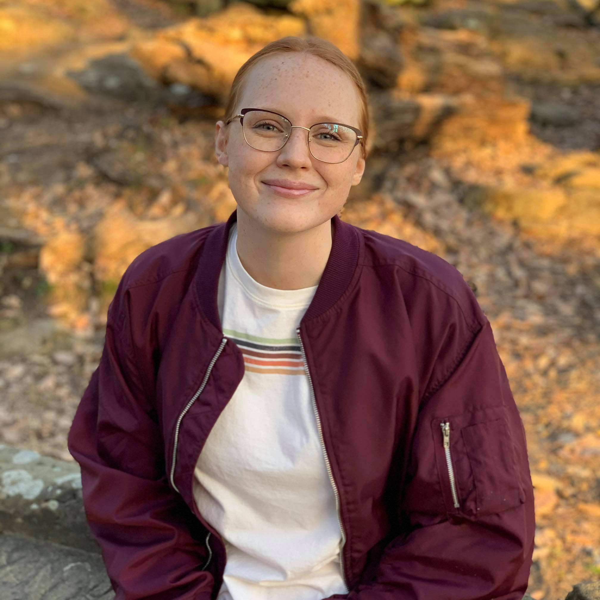

About me

Third-year student studying computer engineering at The Ohio State University. Specializes in utilizing Java, C++, and more to create and devise solutions to exceptionally challenging tasks. Open-minded to new technologies, programs, and ways of problem-solving. Plenty of invaluable, goal-reaching, team-based experience throughout various projects.
As early as I can remember, I have been fascinated with the world of computers. I grew from Minesweeper, to Minecraft, to Eclipse, and still, the span of computer software never ceased to amaze me. The infinite possibilities and potential software engineering holds for our world is groundbreaking, and I’m very thankful to be a part of this exciting, evolving future.
I allow myself to be open-minded about potential internships and job titles. Software engineering is a massive field with so many professions to choose from, so why limit yourself? I look forward to finding my niche with the help of future employers and mentors.
Hobbies
In my spare time, you can frequently find me gaming and listening to music.
Some of my favorite games include:
- League of Legends
- Civilization
- Honkai Impact
- Genshin Impact
- Minecraft
- Elder Scrolls Online
- Skyrim
My favorite champion from League of Legends is Ahri. Let's take a peek at some of her lore from the League of Legends website:
Ahri’s origins are a mystery, even to her.She has no clue as to the history of her vastayan tribe—or their place among the rest—save for the twin gemstones she has worn her entire life. In fact, her earliest memories are of running with icefoxes in the northern reaches of Shon-Xan. Though she knew she was not one of them, they clearly saw her as something of a kindred spirit, and came to accept her within the pack.
In that wild, predatory existence, Ahri nonetheless felt a deeper connection to the forests around her. In time, she came to understand that this was the magic of the vastaya that coursed through every fiber of her being, and the realm of spirits that lay beyond. With no one to teach her, instead she learned to call upon this power in her own ways—most often using it to quicken her reflexes in pursuit of prey. If she was careful and close enough, she also found she might soothe a panicked deer, so that it remained serene and calm even as she and her packmates sank their teeth into its flesh.
The world of mortals was as distant and unsettling to Ahri as it was to the icefoxes, but she felt drawn to it for reasons she could not explain. Humans in particular were coarse, gruff creatures… and when a band of huntsmen camped nearby, Ahri watched them from afar as they went about their grim business.
When one of them was wounded by a stray arrow, Ahri could feel his life seeping away. Knowing nothing but the instincts of a predator, she savored the spirit essence leaving his body, and through it gained brief flashes of his memories—the lover he had lost in battle, and the children he had left behind when he came north. Ahri subtly pushed his emotions from fear to sorrow to joy, and comforted him with visions of a sun-soaked meadow as he died.
Afterward, she found that human words now came to her easily, like something from a half-remembered dream, and Ahri knew the time had come to leave the pack behind.

Keeping to the fringes of society, she felt more alive than ever. Her predatory nature remained, but she was caught up in a riot of new experiences, emotions, and customs across Ionia. Mortals, it seemed, also became fascinated by her in return—and she often used this to her advantage, draining their essence while charming them with recollections of beauty, hallucinations of deep longing, and occasionally dreams colored by raw sorrow.
She grew drunk on memories that were not her own, and exhilarated in ending the lives of others even as she felt the grief and woe she brought to her victims. She experienced heartbreak and elation in tantalizing flashes that left her craving more. She wept at the images of brutal invaders from a faraway land of iron and stone. It was overwhelming, but she sensed her own power fading whenever she tried to stay away, and could not help but partake again and again… as much as it pained her heart to do so.
Through countless stolen visions, Ahri began to glimpse more about the vastaya. It seemed she was not alone, with many tribes now having somewhat troubled relationships with mortals. Eventually, she learned of a rebellion aiming to restore their people to some kind of former glory.
This, perhaps, was the link to a past she could not remember.
With the twin gemstones in hand, Ahri has set out in search of others like her. No more will she rely on borrowed memories and unfamiliar dreams—and if any trace of her tribe still exists in Runeterra, then she is determined to find it.